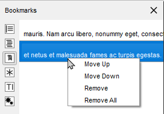
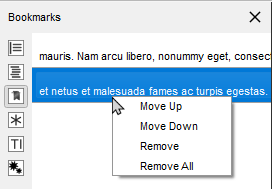

TeXstudio is a specialised LaTeX-editor. It helps to type LaTeX-documents more comfortable by helping to find the right commands, supporting error analysis and providing an easy way to view the results.
The actual latex system needs to be installed separately and is not provided by TeXstudio.
Here we assume that TeXstudio and a LaTeX-system are already installed on your system.
Before we take a closer look at all the possibilities of TeXstudio, let's look at the application window first. After start of TeXstudio we see a lot of things. Some elements in the image are framed in different colors for further explanations:
The main window is divided into three parts (blue): On the left we have a "side panel" (currently showing an empty Structure) that provides many different functions. On the lower right you see a messages panel. You can switch to the log panel, the preview panel, or the search results panel there. The third area is left to the editor. You can have multiple editors open, which you select using tabs. You may increase the area for editors by turning off the side panel or the messages panel. This can be done easily via the two icons in the lower left corner (marked orange). They are in the status bar, which can be hidden (s. menu View/Show).
LaTeX needs some configuartion code in the document. The Quick Start Wizard offers an easy way to set up an typical document.

Select Wizards/Quick Start... and confirm the dialog with OK. This will lead to this basic document:
\documentclass[10pt,a4paper]{article}
\usepackage[utf8]{inputenc}
\usepackage[T1]{fontenc}
\usepackage{amsmath}
\usepackage{amssymb}
\usepackage{graphicx}
\begin{document}
\end{document}We will not go over the content of the document in detail, that is for the LaTeX-tutorial, as our focus is the editor.
The file needs to be saved on the computer to be useful. So next we click the save button (or use CTRL+S) and save it with a sensible name like “getting_started.tex”.
We can select \section from the section button in order to insert the section command and add a title text.

We can insert an equation environment via the menu Math/Math equations/env equation or by pressing CTRL+SHIFT+N

LaTeX offers a huge number of mathematical and other symbols. An convenient way of selecting the right one is using the symbol pane on the left side. Symbols can be declared as favourites and the most used symbols are collected as well to allow faster navigation.

Compiling a document means translating it from the LaTeX source code into a pdf file. This can be performed by clicking on the compile button or using the key F6.

This calls the actual LaTeX-system (pdflatex by default) to compile the document on the disk. The Message Pane shows results from that run and will jump to the log-view in case of errors.
Now we like to see the results. For this, click the view button or press F7.

The pdf document is presented right of the text within TeXstudio. You can scroll and zoom to examine the result. CTRL+left click on text or images within the pdf will jump to the corresponding source code.
Pressing F7 or clicking the view button actually scrolls the pdf to same position in the document where the cursor is in the source document, see here for details.
There are two different ways to create a new document that are described in the following subsections:
To define the preamble of your document, you can use the "Quick start" wizard ("Wizard" menu).

This dialog allows you to set the main features of your document (class, paper size, encoding...). Note : You can add other options by clicking the "+" buttons. All your settings are recorded.
You can also type your own preamble model in the editor : with the "Copy/paste" or "Save As" commands, you can use it for a new document.
For new documents, templates can be used by using the command "File/New from template". A dialogue gives a selection of templates.

You can either create a new editor document from the template or create it as file(s) on disk and open these in the editor. The former option is not available for multi-file templates.
New templates can be created by using the command "File/Make Template" on a opened document which you like to have has a template. Note that this dialog currently does not support the full capabilities of the template system. In particular you cannot supply a preview image or create a multi-file template with it. You'll have to do this manually (s. The template format below).
User added templates can be edited or deleted by using the context menu in the template selection dialogue. Built-in templates can not be changed.
User templates are saved in the /templates/user/ subdirectory of the config directory.
To define a new part in your document (part, section, subsection, ...) with TeXstudio, just use this combo box button in the format toolbar of the main toolbar:

The "Structure View" (left panel) lets you quickly reach any part of your document. All you need to do is to click on any item (label, section...) and you will be taken to the beginning of the corresponding area in the editor. The mechanism for jumping to a line does not anymore only consider line numbers but really remembers text lines. Thus adding and removing lines will not lead to jumps to wrong locations.
A light-blue background shows the present cursor position in the text in the structure view as well. A greenish background denotes sections which are in the appendix.

The "Structure View" is automatically updated as you type. You can also use the "Refresh Structure" (menu "Idefix") command at any moment.
The structure view shows labels, sections, includes and beamer blocks and todos.
There are two kind of todos that will be listed a) todos from a todo-like command, e.g. \todo{} from the package todonotes. b) todo-comments: This is a comment with a "% TODO" or "%todo". You can adapt the regular expression for other comments to be marked as todo-comment in options/advanced editor/Regular Expression for TODO comment, e.g "%\s?[A-Z][A-Z_\-]+" for any comment starting with at least two capital letter only comment.
The structure view also offers a context menu which allows one to copy/cut all text which belongs to a section (including subsection) and paste it before or after a section. Section can be indented/unindented which means that the hierarchy level is changed by one, i.e. \section is changed to \subsection, and all subsections are treated accordingly
The side panel on the left offers a TOC view. The TOC shows the structure of your whole document by means of section commands (part, section, subsection, …). A mouse over shows you, in which file the section actually is.

The image shows this: A root file named document.tex that includes the file named file1.tex. The root file contains the section „Main text“, while file1.tex contains the subsection „External”. By placing the mouse pointer over this subsection in the TOC view, you find the file name file1.tex in the mouse over. This works even if the file is not open (but the document must be loaded by TeXstudio, s. Automatically load included files in editor settings). In this case a mouse click on the subsection in the TOC will open the file for you. Notice the different shades of color that indicate the sections are in different files. It can happen, that an included file doesn’t contain any sections. Then the file name itself appears in the TOC (without file extension):

The mouse over now would show the name of the file that includes file1.tex (namely document.tex). The indentation shows that the text of file1.tex is part of the section “Main text”. You may like to choose a different color in the configuration dialog (s. option Use color in global TOC in advanced editor settings).
You can use bookmarks in the editor of Texstudio. This can help keep text lines in mind and speed up navigation between them. To the left of the editor's text area is a bookmark column that displays the bookmark icons. Here you can open a context menu (s. image below) and select the bookmark you want to set for a text line. Each of the ten numbered bookmarks can be used only once (when you set it a second time in the same editor, then the first one is removed), while the unnamed bookmark can be used many times. Also you can remove bookmarks with the first entry in the menu. A faster way setting bookmarks is clicking with the left mouse button in the bookmark column and Texstudio will choose a bookmark or remove an existing one.

You may choose the Bookmarks view of the left side panel, which shows the text for each line with a bookmark of all editors. With the ease of a mouse click you can jump to the text line in the editor. A tooltip shows the surrounding context of the line (s. left image below). The lines are ordered in the order you created the bookmarks. A context menu allows you to change the order of lines or remove bookmarks (s. right image below).
 

You probably noticed the three buttons (placed in the status line) on the lower right side of the TeXstudio window, which look like bookmarks 1, 2, and 3 (s. image Bookmarks above). With a click you can jump to the corresponding bookmark in the current editor. In fact this is a subset of the actions you can find in the menu Edit/Goto Bookmark shown in the following image in the middle. This menu also shows you the shortcuts you can use (you may miss Ctrl+0 at the end of the list, but this shortcut resets the zoom level of the editor). From the Edit/Go to menu you can choose entry Line to jump to a line with a given line number. You may want to use Previous mark or Next mark to find unnamed bookmarks. For the sake of completeness it should be said that bookmark is one of several types of markers (s. The log files). You can toggle the bookmark of the line with the text cursor using the actions from the menu Edit/Toggle Bookmark, which can be seen in the following image on the right.


You can quickly set the format of a part of your text with this tool bar :

Additional option: a selected text can be directly framed by certain environments. Example: while clicking on the button "Bold" after having selected the word "Hello" , you will obtain the code: \textbf{Hello}.
This option is available for all the environments indicated by "[selection]" in the "LaTeX" menu.
The menu "Edit" -> "Text Operations" contains a few methods for changing the capitalization of selected text:
Both variants of "To Titlecase" leave small words like a, the, of etc. in lowercase. Additionally, "To Titlecase (smart)" does not convert any words containing capital letters, assuming they are acronymes which require a fixed capitalization (e.g. "TeXstudio").
If you have text containing reserved TeX characters and want the text to appear literally in your document, you have to escape the reserved characters to prevent LaTeX from interpreting them. The following functions take care of that (Menu: Idefix)
For example: "Less than 10% of computer users know the meaning of $PATH." will be converted to "Less than 10\% of computer users know the meaning of \$PATH."
The usual "spacing" commands are available in the "LaTeX" and "Math" menus.
The usual list environments code can be insert quickly via the "LaTeX-List" menu.
Note : the shortcut for the \item command is Ctrl+Shift+I.
With the "Tabular" wizard ("Wizard" menu), the LaTeX code for a tabular environment can be quickly inserted :

You can set the main features of your table.
Note : this dialog allows you to type directly the code in the cells.
The corresponding LaTeX code is automatically inserted in the editor.
TeXstudio provides some commands to ease handling of tables. The commands are located at LaTeX → Manipulate Table and in the Table toolbar. Please be aware that some unexpected results may arise, if the table constructing commands get too complex. Following commands are offered:
TeXstudio also allows block cursors. Press <Ctrl>+<Alt>+<Shift> and drag the cursor with the mouse. The block cursor works like a set of normal cursors. You can copy and paste text as usual. Also you can type in new text, which will be added in every row.

To help you to insert a "tabbing" code, you can use the "Tabbing" wizard ("Wizard" menu) :

To insert a picture in your document, just use the "\includegraphics" command in the "LaTeX" menu. Then, click on the "browser" button in the dialog to select the graphic file.
Note : you can insert a "figure" LaTeX environment ("LaTeX - Environments" menu) before inserting the picture.

Properly inserting figures is a challenge for LaTeX beginners and still quite a bit of text to type for the expert. Therefore TeXstudio offers a wizard for handling graphics insertion code in your document. "Graphics options" defines the optional parameter of \includegraphics[options]{file}. While the most used width/height attributes can be easily set, alternatively you have full control with the user defined setting.
Place the graphic inside a figure environment if it does not have to be at an exact position in the text. Then LaTeX will determine an optimal position on the page.
By pressing the "Save as default" button the current settings (except file, caption and label) are stored and will hence be used as default when you open the wizard.
The wizard also comes into play when you drag drop an image file to your document or use copy in explorer and paste in TeXstudio. Together with the adjustable default parameters this makes insertion of new pictures very fast. Furthermore, if you start the wizard while the cursor is on picture code, the wizard is used to manipulate the existing picture settings.

This toolbox in the toolbar allows you to insert quickly the label, cite, ref, footnote... code.
Note : the labels used in your documents are displayed in the "Structure View".

Additional option:for the \ref command, a dialog box allows you to select directly the label.
You can toggle in the "in-line math" environment with the "f(x)" button in the toolbar (shortcut : Ctrl+Alt+M) or with the "Math" menu. The shortcut for the "display math" environment is : Alt+Shift+M.
The "Math" toolbar allows you to insert the most currents mathematical forms (frac, sqrt...) like the \left and \right tags.

With the "symbols panels" in the structure view, you can insert the code of 400 mathematical symbols.

You can also define the format of your mathematical text via the "Math" menu.
For the "array" environments, a wizard (like the "Tabular" wizard) is available in the "Wizard" menu. With this wizard, you can select the environment : array, matrix, pmatrix.… The cells can be directly completed.

Whenever you press \ followed by a letter, a list of possible LaTeX tags is shown where you select the right one. If you type additional letters, the list is filtered, so that only the tags starting with the already written text are shown. If the list contains words which all start with the same letter combination, you can press Tab to complete all common letters. If only one element is present in the list, Tab selects this one to do the completion, like Enter. This behaviour is similar to tab completion in bash shells. You can also press Ctrl+Space to open this list whenever you want.
If a tag has different options, a short descriptive text is inserted into your text, telling you the meaning of each option. You can press Ctrl+Left, Ctrl+Right to select all positions.
Furthermore normal text can be completed by starting to type a word and pressing Ctrl+Space. All appropriate words in the current document are used as possible suggestions.
If an environment is to be inserted, typing in the beginning of the environment name and pressing Ctrl+Alt+Space gives suggestions for adequate environments which are inserted completely with \begin{env}..\end{env}.
And finally, user tags can be assigned an abbreviation which can also be used with completion. Just type in the start of the abbreviation and start the completion with Ctrl+Space. The abbreviation should show up in the completion list, especially marked with “abbreviation (template)”.
If you change a command by completing a new command, only the command name is substituted. The same is true for environments, where the environment is changed in the \begin- and \end-command.
The completer has several operation modes which are shown in the tabs below the command list.
TeXstudio has integrated a simple thesaurus. OpenOffice 2.x databases are used for this. By placing the cursor on a word and activating the thesaurus (Ctrl+Shift+F8 or Edit/Thesaurus), it tries to find synonyms for this word. Please be patient if you start the thesaurus at first time since loading the database just occurs then and can take a few moments.

The first line to the left contains the word, for which a synonym is searched for. The list below gives a list of word classes. The can be chosen to reduce the number of suggestions. The column to the right contains the list of suggested synonyms. A selected word from this list apears in the first line to the right as proposition for replacement of the text. This word can be changed manually. It is also used to do further investigations for words and their synonyms which "start with" or "contain" that word. With "lookup" it can be directly used to look for a synonym for that word.
With the shortcut Alt+Del, the word under the cursor is deleted. If it is a command, the command is deleted including opening and closing braces. E.g. "\textbf{text}" leave "text". If it is an environment, the enclosing begin/end are removed.
If you place the cursor on an environment name, after a moment a mirror-cursor is activated on the environment name which allows synchronous change of the environment name in the begin- and end-command. So if you want to change a "\begin{tabular}...\end{tabular}" construction to "\begin{tabularx}...\end{tabularx}", place the text cursor on "tabular", wait for a second and then, after the mirror-cursor appears, change "tabular" to "tabularx".
If you select something and then start to type in a command and complete it, the selection is put in as first argument. E.g. you have a "text", select it and start typing "\textbf", command which is completed. The resulting text is "\textbf{text}".
The easiest way to compile a document is to use the "Compile" command or the "Build&View" command ("Compile" button - shortcut : F6). You can select the default command via the "Configure TeXstudio" dialog.
(You can also launch each command one by one in the "Tools" menu).
Note : the "Clean" command in the "Tools menu" allows you to erase the files (dvi, toc, aux...) generated by a LaTeX compilation (except the ps and pdf files).

Warning: all your files must have an extension.
The log panel gives you insight to all the informations output to the log file by the command processing your LaTeX file. This panel can show the log file in two ways: First the log file, highlighted at important messages, and second as a table, that extracts the error and warning messages aswell as messages for bad boxes from the log file for easier overview. The buttons Log File and Issues let you show or hide the two representations (but you can't hide both at the same time). If you choose to show both of them then the log panel will be split vertically into two parts.

Use the buttons Show Error, Show Warning, Show BadBox (see tooltips) to choose whether error messages (red), warning messages (yellow) or messages for bad boxes (blue) will be shown or hidden. Use the button Show Log Markers to display or hide log marker icons left to the lines in the editor. The tooltips for the log markers show message details.
In case that the log file contains error messages the log panel is opened automatically (check option Show log in case of compile error, s. Build settings) and log markers are activated. The editor's cursor will be placed in the first line which has an error marker (check option Go to error when displaying log, s. Adv. Editor settings).
You may use the buttons Previous Error and Next Error to jump back or forth to the previous or next error. The shortcuts for this are Ctrl+Shift+Up/Down, accordingly Ctrl+Alt+Up/Down (these you have to set up on your own, s. Shortcut options for actions in menu Idefix/Go to) and Alt+Shift+Up/Down are used for warnings and bad boxes respectively. You can jump between markers of any type with Ctrl+Up/Down.
When you select an entry in the table then the editor (and the log file) scrolls to the corresponding location. The log markers will be activated (check option Show log markers when clicking log entry, s. Adv. Editor settings). The log file informations can be shown or hidden by clicking on the Log File button. The Issues button offers a similar function for the table with the messages.
TeXstudio has an internal (built-in) pdf viewer that lets you view your pdf documents. The viewer can be embedded or window-based (in a separate window). The former uses an area to the right of the editor, the latter uses its own window and gives the user more options. The viewer can be opened by clicking the View button or by pressing the F7 key.
You may want to change otions in the config dialog (s. Internal PDF Viewer). For forward and inverse searching, scrolling follows cursor, and cursor follows scrolling see Forward and Inverse searching.
You can choose main mode Magnify or Scroll from the toolbar. The mouse cursor used is a magnifier glass, or an open hand. These offer following actions:
Magnify mode only
Scroll mode only
Magnify and Scroll mode
Remarks:
The windowed pdf viewer arranges the pages in a customizable grid of columns and rows (s. menu View/Grid) in which the pages are placed. The first page may be placed on the left in the first row (i.e. a grid page offset of 0) and the following pages fill the row and so on:

A grid page offset of 0 may not be suitable in all cases. For example, if you are working on a book, since books have odd pages on the right. The first page of the document shown in the previous image should be positioned in the second or forth column (i.e. a grid page offset of 1 or 3). Thus each grid row starts with an even (left) page and ends with an odd (right) page (if appropriate):
To meet this requirement, you can manually change the offset for the first page in any grid. To do this, use Shift + left mouse button click on any place of the grid while in Scroll mode. The first page will be moved to the place that is in the first row and in the same column as the place you selected with the mouse. You may frequently use grid 2x1 with 2 columns to view books. In this case, for the sake of simplicity, the first page is automatically shifted to the right (i.e. an offset of 1 is set).
Hint: When option Single Page Step (menu View/Grid) is set, a manually set grid page offset gets ignored.
You can also use the pdf viewer to get the x and y coordinates of a point on a page by performing Ctrl + Shift + left mouse button click (the mouse cursor changes to a cross) at that point. By doing so, the x and y coordinates of the mouse position (in centimeters) with respect to the bottom left corner of the current page are copied into your clipboard.
Example for x, y copied to clipboard: 10.16, 12.8372
This becomes particularly useful when adjusting margins or working with TikZ.
Normally every structure command marks a start of foldable range, and every environment or TeX group constructs a foldable range. You can mark an extra foldable range by inserting special comments %BEGIN_FOLD and %END_FOLD.

The latex syntax checker takes the list of possible completion commands to determine if a command is correct. The completion list contains partially additional information to determine in which context a command is valid, whether it is valid only in math-mode or only in tabular-mode.
Furthermore the correctness of tabulars is checked in a little more detail. The number of columns is analyzed and checked in the subsequent rows. If more or less columns are given in a row, a warning maker is shown.
For the "bib" files , the "Bibliography" menu enables you to directly insert the entries corresponding to the standard types of document.
Note: the optional fields can be automatically deleted with the "Clean" command of the "Bibliography" menu.

Apart from the supported SVN features already describes in section , TeXstudio supports two more commands.
"File/Checkin" performs an explicit save and check in, with a input dialog which asks for an checkin in message which is stored in the SVN history.
"File/Show old Revisions" pops up a dialog, which shows all available revisions. A selection of an older revision leads to instantaneous change of the current document to that older revision. You can select and copy old parts to transfer them to the most recent version of your document, by copying the parts and then going back to most recent version. If you start editing that document directly, the dialog is closed and the present text will be your new most recent version though yet unsaved.
Texstudio offers the possibility to reformat an existing latex table after a table template.
For example, you have entered following table into txs:
\begin{tabular}{ll}
a&b\\
c&d\\
\end{tabular}Place the cursor inside the table and select the menu "Latex/Manipulate Tables/Remodel Table Using Template".
Now you can select a template which defines the formatting of the table. A number of templates are predefined by txs:
By selecting the first entry, the table is reformated to:
\begin{tabular}{|l|l|}
\hline
\textbf{a}&\textbf{b}\\ \hline
c&d\\ \hline
\end{tabular}These templates give the opportunity to easily reformat tables after a predefined fashion, thus achieving a uniform table style in a document, even if the tables are entered in a very simple style.
The definition of new templates is described here.
TeXstudio allows you to insert your own macros. These macros are defined with the "Macros - Edit Macros" menu. Macros can consist of simple text which is directly placed into txs. It can also be an "environment" which are automatically extended by begin/end or it can be a java script. The needed functionality can be selected by checkbox.
The "abbreviation" is a pseudo-command for the latex completer. If the pseudo-command is completed, the macro will be inserted instead. Note that the pseudo-command needs to start with a backslash ("\").
"Trigger" is a regular expression which triggers the inclusion of the macro: When the last written characters match this expression, they are removed and the macro is inserted/executed. (see below for more details).
Some macros can be directly downloaded from an internet repository. The dialog is started with the button "Browse". For easier data exchange, macros can be im- and exported to a file. If you want to add a macro of your own to that repository, you can hand it in as a feature request on Github.
Each macro can be assigned a fixed shortcut in the "Shortcut" box.
The list of macros on the left-hand side represents the macro ordering in the macro-menu. It is rearranged with the "up"/"down"/"add"/"remove" buttons or with drag and drop. Folders can be added to sort a larger number of macros sensibly. To move macros into/from folders, only drag and drop works.
The "run script" button directly executes a script in the editor for testing.

Apart from normal text, some special codes are recognized and replaced on insertion.
The text will be used as environment-name, thus "%environment" will be inserted as:
\begin{environment }
\end{environment }
Note: texstudio needs that the env-name starts with "%", though that character is not placed on insertion.
Instead of using code snippets, you can also make use of scripting with QJS, an application scripting language based on ECMAScript.
Put "%SCRIPT" in the first line to declare a macro as a script. Here are the objects that provide the interface to the TeXstudio internals:
The following table gives an overview on the provided commands.
| Command | Description |
|---|---|
| alert(str), information(str), warning(str) or critical(str) | shows str in a messagebox with a certain icon |
| confirm(str) or confirmWarning(str) | shows str as a yes/no question in a messagebox |
| debug(str) | prints str to stdout |
| writeFile(name, value) | Writes value to file name (requires write privileges) |
| readFile(name) | Reads the entire file name (requires read privileges) |
| system(cmd, workingDirectory="") | Calls an external command cmd, which includes the program name and its arguments. cmd may undergo command-line expansion as follows: If cmd contains the string txs:/// or if it does not contain any pipe (|) characters, then cmd undergoes standard command-line expansion like any other external command. When expanding any tokens the current file is assumed to be the empty string, so any tokens that use the current file (e.g. % or ?) will expand to the empty string too. If cmd does not contain the string txs:/// and it contains at least one pipe character, then it is executed without any string expansion or replacement. If workingDirectory is not set, the working directory will be inherited from the TeXstudio executable. This command returns a ProcessX object which has the following methods: - waitForFinished: Wait until the process is finished - readAllStandardOutputStr: Returns the stdout - readAllStandardErrorStr: Returns the stderr - exitCode: The exit code - exitStatus: The qt exit status - terminate or kill: Stops the process If the script does is not granted permission to run the external command, then system() returns null. Examples List all the files in the Subversion repository /usr/local/svnrepository The command contains the string txs:///, so it undergoes the expansion as an external command. %SCRIPT cmd = system(“txs:///svn ls /usr/local/svnrepository”) cmd.waitForFinished() output = cmd.readAllStandardOutputStr() alert (output) Download the web page from http://www.my-website.com??arg1=abc&arg2=def and save it as the local file /home/john/page.html. The command does not contain any pipe characters (|), so it undergoes the expansion as an external command. Note that we have doubled the character ? in the URL, otherwise it would be expanded to current file which in our case would be the empty string. %SCRIPT cmd = system (“wget -O /home/john/page.html http://www.my-website.com??arg1=abc&arg2=def”) cmd.waitForFinished() |
| Unsuppoted since txs 4.x. Sets a temporary, global variable | |
| Unsuppoted since txs 4.x. Reads a global variable | |
| Unsuppoted since txs 4.x. Checks for the existence of a global variable | |
| setPersistent(name, value) | Sets a global configuration variable. (can change the values of the ini file, requires write privileges) |
| getPersistent(name) | Reads a global configuration variable. (can read all values of the ini file, requires read privileges) |
| hasPersistent(name) | Checks if a global configuration variable exists. (requires read privileges) |
| hasReadPrivileges() | Checks if the script has read privileges |
| hasWritePrivileges() | Checks if the script has write privileges |
| registerAsBackgroundScript([id]) | Allows the script to run in the background (necessary iff the script should handle events/signals) |
| triggerMatches | Matches of the regular trigger expression, if the script was called by an editor trigger. |
| triggerId | Numeric id of the trigger, if the script was called by an event trigger. |
| Unsuppoted since txs 4.x. Includes another script. Can be a filename or the name of a macro. | |
| pdfs | List of all open, internal pdf viewers . |
| editor.search(searchFor, [options], [scope], [callback]) | Searches something in the editor. - searchFor is the text which is searched. It can be either a string (e.g. "..") or a regexp (e.g. /[.]{2}/). - options is a string and a combination of "i", "g", "w" to specify a case-insensitive search, a global search (continue after the first match) or a whole-word-only search. - scope is a cursor constraining the search scope (see editor.document().cursor). - callback is a function which is called for every match. A cursor describing the position of the match is passed as first argument. All arguments except searchFor are optional, and the order may be changed (which may not be future compatible). The function returns the number of found matches. |
| editor.replace(searchFor, [options], [scope], [replaceWith]) | This function searches and replaces something in the editor. It behaves like editor.search apart from the replaceWith argument which can be a simple string or a callback function. If it is a function the return value of replaceWith is used to replace the match described by the cursor passed to replaceWith. |
| editor.replaceSelectedText(newText, [options]) | This function replaces the current selections with newText or inserts newText, if nothing is selected. If newText is a function, it will be called with the selected text and corresponding cursor, and the return value will be the newText. It is recommended to use this function for all text replacements/insertions, since it is the easiest way to handle multiple cursors/block selections correctly. Options is an object that can have the following properties: - {"noEmpty": true} only replaces; does not insert anything if the selection is empty- {"onlyEmpty": true} only inserts at the cursor position; does not change non empty selected text- {"append": true} appends newText to the current selection, does not remove the old text- {"prepend": true} prepends newText to the current selection, does not remove the old text- {"macro": true} Treats newText as normal macro text, e.g. inserting %< %> placeholdersExamples: editor.replaceSelectedText("world", {"append": true} ) Appends "world" to the current selections.editor.replaceSelectedText(function(s){return s.toUpperCase();}) Converts the current selection to uppercase. |
| editor.insertSnippet(text); | Inserts a text snippet into the editor. For a list of extended features and syntax see Text Macros. |
| editor.undo(); | undo last command in editor |
| editor.redo(); | redo last command in editor |
| editor.cut(); | cut selection to clipboard |
| editor.copy(); | copy selection to clipboard |
| editor.paste(); | paste clipboard contents |
| editor.selectAll(); | select all |
| editor.selectNothing(); | select nothing (clear selections) |
| editor.cutBuffer | If a macro was triggered by a key press and there was a selection previous to the key press, the content of the selection is stored in the cutBuffer. The selection and its content is removed before the macro is entered. |
| editor.find(); | activate "find panel" |
| editor.find(QString text, bool highlight, bool regex, bool word=false,bool caseSensitive=false); | activate "find panel" with predefined values |
| editor.find(QString text, bool highlight, bool regex, bool word, bool caseSensitive, bool fromCursor, bool selection); | activate "find panel" with predefined values |
| editor.findNext(); | find next |
| editor.replacePanel(); | replace (if find panel open and something is selected) |
| editor.gotoLine(); | activate "goto line panel" |
| editor.indentSelection(); | indent selection |
| editor.unindentSelection(); | unindent selection |
| editor.commentSelection(); | comment selection |
| editor.uncommentSelection(); | uncomment selection |
| editor.clearPlaceHolders(); | clear place holders |
| editor.nextPlaceHolder(); | jump to next place holder |
| editor.previousPlaceHolder() | jump to previous place holder |
| editor.setPlaceHolder(int i, bool selectCursors=true); | set Placeholder |
| editor.setFileName(f); | set filename to f |
| editor.write(str) | inserts str at the current cursors position (if there are cursor mirrors, str will be inserted by all of them) |
| editor.insertText(str) | inserts str at the current cursor position (cursor mirrors are ignored,so it is preferable to use replaceSelectedText or write instead) |
| editor.setText(text) | replace the whole text of the current document by text |
| editor.text() | return the text of the complete document |
| editor.text(int line) | return text of line |
| editor.document().lineCount() | Returns the number of lines |
| editor.document().visualLineCount() | Returns the number of visual lines (counting wrapped lines) |
| Unsupported in txs 4.x. Use new QDocumentCursor(...) instead, see section cursor. | |
| editor.document().text([removeTrailing = false], [preserveIndent = true]) | Returns the complete text of the document |
| editor.document().textLines() | Returns an array of all text lines |
| editor.document().lineEndingString() | Returns a string containing the ending of a line (\n or \n\r) |
| Unsupported in txs 4.x. | |
| editor.document().canUndo() | Returns true if undo is possible |
| editor.document().canRedo() | Returns true if redo is possible |
| editor.document().expand(lineNr) | Unfold the line in editor |
| editor.document().collapse(lineNr) | Fold the line in editor |
| editor.document().expandParents(lineNr) | Expand all parents of the line until it is visible |
| editor.document().foldBlockAt(bool unFold, lineNr); | Collapses or expands the first block before lineNr |
| editor.document().getMasterDocument(); | Returns the open document which directly includes this document |
| Deprecated: Use getRootDocument() instead | |
| editor.document().getRootDocument(); | Returns the open document which indireclty includes this document and is not itself included by any other document |
| editor.document().getMagicComment(name); | Returns the content of a magic comment, if it exists |
| editor.document().updateMagicComment(name, value, [create = false]); | Changes a magic comment |
| editor.document().labelItems/refItems/bibItems | Returns the ids of all labels/references or included bibliography files. |
| editor.document().getLastEnvName(lineNr) | Returns the name of the current environment (at the end of the line). |
| documentManager.currentDocument | Current document (usually the same as editor.document(), unless the script is running in background mode) |
| documents.masterDocument | Master document if defined |
| [documentManager.]documents | Array of all open documents |
| documentManager.findDocument(fileName) | Returns the open document with a certain file name |
| documentManager.singleMode() | Returns true if there is no explicit master document |
| Deprecated: Use getRootDocumentForDoc(document) instead | |
| documentManager.getRootDocumentForDoc(document) | Returns the open document (possibly indirectly) including the given document |
| documentManager.findFileFromBibId(id) | Returns the file name of the bib file containing an entry with the given id |
| new QDocumentCursor(editor.document(),line, [column = 0], [lineTo = -1], [columnTo = length of lineTo]) | Returns a cursor object. If lineTo is given the cursor has a selection from line:column to lineTo:columnTo, otherwise not. |
| cursor.atEnd() | returns whether the cursor is at the end of the document |
| cursor.atStart() | returns whether the cursor is at the start of the document |
| cursor.atBlockEnd() | returns whether the cursor is at the end of a block |
| cursor.atBlockStart() | returns whether the cursor is at the start of a block |
| cursor.atLineEnd() | returns whether the cursor is at the end of a line |
| cursor.atLineStart() | returns whether the cursor is at the start of a line |
| cursor.hasSelection() | return whether the cursor has a selection |
| cursor.lineNumber() | returns the line number of the cursor |
| cursor.columnNumber() | returns the column of the cursor |
| cursor.anchorLineNumber() | returns the line number of the anchor. |
| cursor.anchorColumnNumber() | returns the column of the anchor. |
| cursor.shift(int offset) | Shift cursor position (text column) by a number of columns (characters) |
| cursor.setPosition(int pos, MoveMode m = MoveAnchor) | set the cursor position after pos-characters counted from document start (very slow) |
| cursor.movePosition(int offset, MoveOperation op = NextCharacter, MoveMode m = MoveAnchor); | move cursor offset times. MoveOperations may be: - cursorEnums.NoMove - cursorEnums.Up - cursorEnums.Down - cursorEnums.Left - cursorEnums.PreviousCharacter = Left - cursorEnums.Right - cursorEnums.NextCharacter = Right - cursorEnums.Start - cursorEnums.StartOfLine - cursorEnums.StartOfBlock = StartOfLine - cursorEnums.StartOfWord - cursorEnums.StartOfWordOrCommand - cursorEnums.PreviousBlock - cursorEnums.PreviousLine = PreviousBlock - cursorEnums.PreviousWord - cursorEnums.WordLeft - cursorEnums.WordRight - cursorEnums.End - cursorEnums.EndOfLine - cursorEnums.EndOfBlock = EndOfLine - cursorEnums.EndOfWord - cursorEnums.EndOfWordOrCommand - cursorEnums.NextWord - cursorEnums.NextBlock - cursorEnums.NextLine = NextBlock Options for MoveMode are: - cursorEnums.MoveAnchor - cursorEnums.KeepAnchor - cursorEnums.ThroughWrap |
| cursor.moveTo(int line, int column); | move cursor to line and column |
| cursor.eraseLine(); | remove current line |
| cursor.insertLine(bool keepAnchor = false); | insert empty line |
| cursor.insertText(text, bool keepAnchor = false) | insert text text at cursor (this function will ignore indentations and mirrors, see editor.write and editor.insertText) |
| cursor.selectedText() | return the selected text |
| cursor.clearSelection(); | clears selection |
| cursor.removeSelectedText(); | removes selected text |
| cursor.replaceSelectedText(text); | replace selected text with text |
| cursor.deleteChar(); | removes char right to the cursor |
| cursor.deletePreviousChar(); | removes char left to the cursor |
| cursor.beginEditBlock(); | begins a new edit block. All cursor operations encapsulated in an edit block are undone/redone at once. |
| cursor.endEditBlock(); | ends an edit block |
| app.getVersion() | Current version (0xMMmm00) |
| app.clipboard | Property to read/write to the clipboard |
| app.getCurrentFileName() | File name of currently edited file |
| app.getAbsoluteFilePath(rel, ext = "") | Converts a relative filename to an absolute one |
| app.load(file) | Loads an file |
| app.fileOpen/Save/Close/.../editUndo/.../QuickBuild/... | All menu commands (i.e. all slots in the texmaker.h file). You can view a list of all currently existing slots on the "menu" page of the config dialog. |
| app.completerIsVisible() | check if completer is visible. |
| app.newManagedMenu([parent menu,] id, caption) | Creates a new menu and returns it |
| app.getManagedMenu(id) | Returns a QMenu with a certain id |
| app.newManagedAction(menu, id, caption) | Creates a new action and returns it - menu: Parent menu - id: Id of the new action (the final, unique id will be menu id/action id) - caption: Visible text You can use action.triggered.connect(function(){ ... }); to link a function to the returned action (for details see the qt signal/slot documentation). |
| app.getManagedAction([id]) | Returns an QAction with a certain id (all ids have the form main/menu1/menu2/.../menuN/action, with usually one menu, e.g. "main/edit/undo", see texmaker.cpp) |
| app.createUI(file, [parent]) | Loads a certain ui file and creates a QWidget* from it |
| app.createUIFromString(string, [parent]) | Creates a QWidget* described in the string |
| app.slowOperationStarted()/slowOperationEnded() | Notify txs about the start/end of a slow operation to temporary disable the endless loop detection. |
| app.simulateKeyPress(shortcut) | Trigger a KeyPress event for the given shortcut, e.g. app.simulateKeyPress("Shift+Up"). Note: this is mainly intended for shortcuts and navigation. Currently, it does not support all functions of a KeyPress event. In particular, you cannot type any text. |
| new UniversalInputDialog() | Creates a new dialog |
| dialog.add(defaultValue, [description, [id]]) | Adds a new variable with the given default value, optional description and id to the dialog; and returns the corresponding qt component. A string default value becomes a QLineEdit, a number a QSpinBox and an array a QComboBox. |
| dialog.get(nr/id) | Returns the current value of the nr-th added variable or the variable with a certain id. |
| dialog.getAll() | Returns the value of all variables as combined numerical/associative array. You can use returnvalue[i] to get the i-th variable, and returnvalue.id to get the variable with a certain id. |
| dialog.exec() | Displays the dialog. Returns 1 if the user accepted the dialog, 0 if it was canceled. |
| dialog.show() | Displays the dialog asynchronously. |
| Not working in txs 4.0.0. |
|
| fileChooser.exec() | show dialog and wait until it is closed again |
| fileChooser.setDir(dir) | set directory in the dialog to dir |
| fileChooser.setFilter(filter) | set file filter to filter, using the QT-format, see above |
| fileChooser.fileName() | return selected filename (after exec) |
Some examples:
Copy current file name to clipboard:
%SCRIPT
app.clipboard = editor.fileName();Execution of editor text:
%SCRIPT
eval(editor.text());Show all properties of an object:
%SCRIPT
function write_properties(obj) {
app.fileNew();
newEditor = documentManager.currentDocument.editorView.editor; //access the newly created document
newEditor.setText(Object.getOwnPropertyNames(obj).join("\n")); //print the properties
}
obj = editor; //object to show (e.g. the current editor)
write_properties(obj)Additional action in the edit menu
%SCRIPT
var menu = app.getManagedMenu("main/edit"); //get edit menu
var act = app.newManagedAction(menu, "script", "scripttest"); //add action
act.triggered.connect(function(){alert("called");}); //register simple handler
registerAsBackgroundScript("test"); //keep handler validAsynchronous dialog:
%SCRIPT
var ui = createUI(" ... path to your ui file ..."); //load dialog
ui.accepted.connect(function(){alert("x");}) //react to dialog closing
registerAsBackgroundScript("abc"); //keep function valid
ui.show(); //show dialogThe dialog is described in an ui file which can be created with the Qt Designer.
More examples can be found in the Wiki.
In its simplest form, the trigger is simply a text, which is replaced by the macro. E.g. trigger="eg" macro="example given", "eg" in "the leg" is replaced on pressing "g" by "example given"
As the trigger is a regular expression, more elaborate triggers can be created. TXS makes use of look-behind searching: "(?<=\s)%" is used to replace a "%" if the previous character is a space. More help on regular expressions can be found on the internet.
You can access the matched expression in the script via the global variable triggerMatches. triggerMatches is an array. It's zero-th component is the match to the complete regexp. The following elements are matches to groups (if groups are defined).
Example:
Trigger: #([a-z])
Typed text: #a
triggerMatches[0] == '#a'
triggerMatches[1] == 'a'Note: Triggers are inactive while the completer is active. For example you cannot trigger on \\sec if the completer is open suggesting to complete \section.
To the scope in which a macro will be active, you can prepend an expression of the pattern (?[scope-type]:...).
| Scope Limiting Expression | Meaning |
|---|---|
(?language:...) |
The macro is only active if the highlighting of the document matches the given language. Example: (?language:latex) |
(?highlighted-as:...) |
Restrict the macro to certain highlighted environments. The possible values correspond to the list on the syntax highlighting config page. Example: (?highlighted-as:numbers,math-delimiter,math-keyword) |
(?not-highlighted-as:...) |
Similar to (?highlighted-as:...), but the macro is deactivated in the given environments. |
You may combine (?language:...) and (?highlighted-as:...) expressions. However, combing (?highlighted-as:...) and (?not-highlighted-as:...) does not make sense logically and has undefined behavior.
Note that you still need the regular expression of the trigger itself. Here's a full complex example: (?language:latex)(?highlighted-as:comment,commentTodo)FIXME. This trigger responds to typing "FIXME", but only in comments and todo-notes of latex documents.
Additionally the following special trigger terms (without parentheses) can be used to execute the script when the corresponding event occurs:
| Special Trigger | Executed on Event |
|---|---|
| ?txs-start | TeXstudio is started. |
| ?new-file | A new file is created |
| ?new-from-template | A new file is created from a template |
| ?load-file | A file is loaded |
| ?load-this-file | The file containing the macro is loaded (only makes sense, if the script is defined as magic comment) |
| ?save-file | A file is saved |
| ?close-file | A file is closed |
| ?master-changed | A document is un/defined as master document |
| ?after-typeset | A latex-like command has ended |
| ?after-command-run | A command run has ended (e.g. a compile command that calls latex twice and opens the viewer, will trigger this event once, but after-typeset twice) |
Multiple of these special triggers can be combined by | symbols.
This command (from the "Tools" menu ) produces a set of html pages from a LaTeX source file with one image for each html page. Each page in the slide presentation corresponds to one of the postscript pages you would obtain running LaTeX.
The command also produces an index page corresponding to the table of contents you would obtain with LaTeX. Each item of the index page includes a link to the corresponding html page.
You can create links in the html pages by using the \ttwplink{}{} command in the tex file.
Synopsis :
\ttwplink{http://www.mylink.com}{my text} (external link)
\ttwplink{page3.html}{my text} (internal link)
\ttwplink{name_of_a_label}{my text} (internal link)
Warning : You can't use this command with the hyperref package (and some others packages). This command can only be used with the "Convert to html" tool.


In this section you will not learn how to find a specific text, as you know it from other editors. Searching is different: If you see something in your pdf document that you want to change, then you need to figure out where to change your LaTeX document in the editor (inverse search). Or you want to figure out where your changed text will be displayed in the pdf (forward search). This is discussed in the following sections for different pdf-viewers.
TeXstudio provides an internal pdf-viewer (s. Internal pdf viewer) which offers forward and inverse search. Make sure that synctex is activated in the pdflatex command (option -synctex=1 needs to be added), though TeXstudio will ask you if it can correct the command itself if it is not set correctly.
Forward search is automatically done every time the pdf-viewer is opened. TeXstudio will jump to the position where your cursor is currently positioned. Additionally you can use CTRL+left mouse button click on a word in the text editor to jump to the pdf or use the context menu and select "Go To PDF".
Inverse search can be activated by clicking in the pdf with CTRL+left mouse button or by selecting "jump to source" in the context menu, which is activated with a right mouse button click.
Furthermore it is possible to enable "Scrolling follows Cursor" in pdf-viewer/configure. This will keep the pdf-viewer position synchronous to your cursor opposition in the editor. Likewise "Cursor follows Scrolling" keeps the editor position synchronous to pdf-viewer position.
So called "magic comments" are a way to adapt the options of the editor on a per-document level. The concept was originally introduced in TeXshop and has been adopted in a number of editors since. TeXstudio supports the following magic comments:
% !TeX spellcheck = de_DE
Defines the language used for spell checking of the document. This overrides the global spellchecking settings. Nevertheless, an appropriate dictionary has to be installed.
If no spellchecking is desired, set value to "none".
% !TeX encoding = utf8
Defines the character encoding of a document.
% !TeX root = filename
Defines the root document for this file (i.e. the file which will be passed to the LaTeX compiler when building). This setting override the automatic root detection in TeXstudio. In turn, it's overridden, if an explicit root document is set at Options -> Root Document.
% !TeX program = pdflatex
Defines the compiler to be used for the document. To be precise, it overrides the default compiler (command txs:///compile) which is used in the actions "Build & View" as well as "Compile". Valid options are "latex","pdflatex","xelatex","lualatex" and "usern" (e.g. user0 as user defined command 0)
% !TeX TXS-program:bibliography = txs:///biber
This is a TeXstudio-specific setting. It overrides the build-system command specified to the left by the one on the right. In the example, we tell TXS to use the biber command (txs:///biber) for the general "Bibliography command (txs:///bibliography). See also the description of the build system.
% !TeX TXS-SCRIPT = foobar % //Trigger = ?load-this-file % app.load("/tmp/test/test.tex"); % app.load("/tmp/test/a.tex"); % TXS-SCRIPT-END
This defines a temporary script macro which is executed, when the file is loaded, and which in turns loads the two files in /tmp/test. .
The macros defined via TXS-SCRIPT are active in all files of a document (e.g. included files). You cannot run them manually. They are run via the trigger (regular expression or special trigger, see section on triggers). The macro is just read once, when the file is opened. Changes during an edit session will only take effect when you reopen the file.
% !BIB program = biber
The special % !BIB program command is understood for compatibility with TeXShop and TeXWorks (also in the variant % !BIB TS-program). This is equivalent to % !TeX TXS-program:bibliography = txs:///biber
TeXstudio can be adapted in a wide range. Some options are directly available in the GUI via context menus, see here, others are available with the "Configure TeXstudio" command in the "Options" menu ("Preferences" under Mac OS X). Note that there are two levels of detail. More advanced or less often used options are only visible if you toggle "Show advanced options" in the lower left corner.
The information presented in the side bar depends on the icon you select from the vertical toolbar on the left side of the panel. These icons can be understood as vertically aligned tabs. A click with the right mouse button allows you to select which icons are presented:
TeXstudio offers a lot of toolbars (marked red), many of which are arranged in a row above the side panel and the editor area (called the main toolbar, the vertical toolbars are called secondary toolbars). One vertical aligend toolbar (the central one, s. image below) resides to the left of the editor area. You can choose which ones to show with a click of the right mouse button on any of them:

The custom toolbar will be discussed in Configuring the Custom Toolbar. The toolbars in the main toolbar can be rearranged, moved somewhere in the window or even disconnected from the window at all. All toolbars are scalable, s. option GUI scaling (needs advanced options) in the config dialog.
You may change the default encoding for new files ("Configure TeXstudio" -> "Editor" -> "Editor Font Encoding") if you don't want utf8 as encoding. Don't forget to set the same encoding in the preamble of your documents. (e.g. \usepackage[utf8]{inputenc}, if you use utf-8).
TeXstudio can auto detect utf-8 and latin1 encoded files, but if you use a different encoding in your existing documents you have to specify it in the configuration dialog before opening them. (and then you also have to disable the auto detection)

LaTeX comes with a number of command line tools to compile and manipulate LaTeX documents. The commands section defines there location and arguments.
The default settings should work with the recent and standard LaTeX distributions, but you could have to modify them ("Configure TeXstudio" -> "Commands"). To change a command, just click on the button at the end of the corresponding line and select the command in the file browser : TeXstudio will automatically adapt the syntax of the command.
You can use a number of special characters / character sequences to address the context of the current document. They are expanded at runtime:
| Special Character | Expands to |
|---|---|
% |
filename of the root document for of current document without extension |
@ |
current line number |
? followed by further characters |
See the instruction at the bottom of the configuration dialog. |
[txs-app-dir] |
Location of the TeXstudio executable (useful for portable settings) |
[txs-settings-dir] |
Location of the settings file (texstudio.ini) |
The section Forward/Inverse search gives some example commands for common viewers.
You can always restore the original settings using the revert button to the right.

Before an external command is executed the command line undergoes expansion where the following tokens are recognized and replaced by TeXstudio:
Examples:
Some viewers can jump to (and visually highlight) a position in the DVI/PDF file that corresponds to a certain line number in the (La)TeX source file. To enable this forward search, you can enter the command line of the corresponding viewer either as command line for an user tool in the User menu (User/User Commands/Edit...) or in the viewer command line in the config dialog ("Options/Configure TeXstudio" -> "Commands"). When the viewer is launched, the **@*-placeholder will be replaced by the current line number and ?c:ame by the complete absolute filename of the current file. If your PDF file is not in the same directory as your .tex file you can use the ?p{pdf}:ame placeholder. For details see External Commands.
On Windows, you can execute DDE commands by inserting a command of the form: dde:///service/control/[commands...] or (since TeXstudio 1.9.9) also dde:///programpath:service/control/[commands...] to start the program if necessary.
Below you can find a list of commands for some common viewers. Of course, you have to replace (your program path)* with the path of the program on your computer, if you want to use a command.
Launch Sumatra from TeXstudio and configure Sumatra for inverse search: "(your sumatra path)" -reuse-instance -inverse-search "\"(your TeXstudio path)\" \"%%f\" -line %%l" "?am.pdf"
Jump to a line in a running Sumatra (Windows only): dde:///SUMATRA/control/[ForwardSearch("?am.pdf","?c:am.tex",@,0,0,1)]
Launch Sumatra if it is not running and jump to a line in it (Windows only): dde:///(your sumatra path):SUMATRA/control/[ForwardSearch("?am.pdf","?c:am.tex",@,0,0,1)]
Launch TeXstudio from Sumatra: "(your TeXstudio path)" "%f" -line %l
A possible value for (your Sumatra path) is C:/Program Files/SumatraPDF/SumatraPDF.exe
Launch Foxit Reader from TeXstudio: "(your Reader path)" "?am.pdf"
Launch Acrobat Reader from TeXstudio: "(your Reader path)" "?am.pdf"
Naviation and closing are achieved via DDE commands. Since version 10 of the adobe products the DDE service name contains a letter for the Product and the version number.
| Product | Service name |
|---|---|
| Adobe Reader 9 | acroview |
| Adobe Acrobat 9 | acroview |
| Adobe Reader 10 | acroviewR10 |
| Adobe Acrobat 10 | acroviewA10 |
| Adobe Reader 11 | acroviewR11 |
| Adobe Acrobat 11 | acroviewA11 |
| Adobe Reader DC | acroviewR15 |
| Adobe Acrobat DC | acroviewA15 |
The following example is for Adobe Reader DC:
Jump to a position in a running Adobe Reader (Windows only): dde:///acroviewR15/control/[DocOpen("?am.pdf")][FileOpen("?am.pdf")][DocGotoNameDest("?am.pdf","jump-position")] jump-position can be defined with the hyperref package
If you have the problem that Adobe Reader does not open, you have to add the program path like this: dde:///"C:\Program Files (x86)\Adobe\Acrobat Reader DC\Reader\AcroRd32.exe":acroviewR15/control/[DocOpen("?am.pdf")][FileOpen("?am.pdf")][DocGotoNameDest("?am.pdf","jump-position")]
Close the document in a running Adobe Reader (Windows only): dde:///acroviewR15/control/[DocOpen("?am.pdf")][FileOpen("?am.pdf")][DocClose("?am.pdf")]
Note: Since Adobe Reader blocks writing to PDFs which are open in the Reader, you have to close the PDF before recompiling. You can define a User Command for the above DDE-command and call it at the beginning of your build chain. This ensures that the file will be closed and thus is writable when compiling.
Launch Yap from TeXstudio: "(your Yap path)" -1 -s @?c:m.tex %.dvi
Launch TeXstudio from Yap: "(your TeXstudio path)" "%f" -line %l
A possible value for (your Yap path) is C:\Program Files\MiKTeX 2.7\miktex\bin\yap.exe
Launch xdvi from TeXstudio: xdvi %.dvi -sourceposition @:?c:m.tex
Launch xdvi from TeXstudio and enable inverse search: xdvi -editor "texstudio %f -line" %.dvi -sourceposition @:%.tex
Launch kdvi from TeXstudio: kdvi "file:%.dvi#src:@ ?c:m.tex"
Launch okular from TeXstudio: okular --unique %.dvi#src:@?c:m.tex
Launch TeXstudio from Okular: texstudio %f -line %l
Launch Skim from TeXstudio: (your Skim path)/Contents/SharedSupport/displayline @ ?am.pdf ?c:ame
Launch TeXstudio from skim: Command: /applications/texstudio.app/contents/macos/texstudio with arguments: "%file" -line %line
A possible value for (your Skim path) is /Applications/Skim.app
Launch qpdfview from TeXstudio: qpdfview --unique ?am.pdf#src:?c:am.tex:@:0 2> /dev/null
Launch TeXstudio from qpdfview: texstudio "%1" -line %2
TeXstudio provides general commands for translating latex.
The default settings use "pdflatex" and the internal pdf viewer. Other commands and viewer can be selected as well as a different bibliography translator.
The "embedded pdf viewer" does not open a new window for viewing the pdf document but presents it directly next to the text in the editor.
A useful alternative might be using the "latexmk" as compile command (if the command is installed on your system), as it handles dependencies with biblatex and index very well.
The advanced options allows finer customization which is in general not necessary.

User commands can be defined here by "adding" them. Each user command has a name with a pattern <command id>:<display name>, e.g. user0:User Command 0. The command id has to be unique and must not contain spaces. In advanced mode, you can reference it using txs:///"<command id>. The display name will be shown in the tools menu. The user commands can be activated either by short cut (alt+shift+F%n) or by the tools menu (Tools/User).
User commands can either consist of a combination of known commands by selecting them from a list of available commands. This is triggered by clicking the spanner-symbol.
Alternatively a command can be directly selected through the file system.

If you enable the advanced options, you can configure the build system in more detail.
Every txs-command is a list of external programs/latex-commands and other txs-commands to call. An external program can be called with its usual command line, while a txs-command with id "foobar" is called by txs:///foobar.
The commands in the list are separated by |, which is just a separator (i.e. it will not pass the stdout from one program to the stdin of the next).
Note: Use command lists only for the meta and user commands listed at Options -> Build. Do not use then at Options -> Commands. The latter should just be single commands (i.e. do not use | there). While it's currently working in some cases, generally we do not guarantee this behavior. It can have surprising side effects such abortion of compilation in some cases. Also, the use of | at Commands may be prohibited completely without further notice in the future.
Each of these txs-command has a unique id, which is shown as tooltip of the displayed name for "normal" commands and in the edit box for user commands. Some important commands are usual: txs:///quick (Build & View, the old quickbuild), txs:///compile (Default compiler), txs:///view (Default viewer), txs:///latex (latex), txs:///pdflatex (pdflatex), txs:///view-pdf (Default Pdf Viewer), txs:///view-pdf-external (External pdf viewer).
For example, in a typical build configuration you might call txs:///quick by pressing F1, which calls txs:///compile, which first calls txs:///pdflatex that calls the actual pdflatey, and then calls txs:///view, which calls txs:///view-pdf, which calls txs:///view-pdf-internal, which displays the pdf.
There is no difference between commands defined as command on the command config page, commands defined as build on the build config page, or commands defined as user commands. They are just separated in the GUI to simplify the interface.
This also means that you can change every command as you want, ignoring its old definition (you could even change its id, when editing the ini file.).
There are however three always defined internal commands, which can only be called and not modified:
| command | description |
|---|---|
| txs:///internal-pdf-viewer | Opens the internal viewer for the current document |
| txs:///view-log | Views the log file for the current document |
| txs:///conditionally-recompile-bibliography | Checks if the bib files have been modified, and calls txs:///recompile-bibliography, iff that is the case |
The internal pdf viewer also accepts the following options (txs:///internal-pdf-viewer) to modify its behaviour:
| option | description |
|---|---|
| --embedded | Opens the viewer embedded |
| --windowed | Opens the viewer windowed (default if no option is given) |
| --close-(all|windowed|embedded) | Close all open viewers, or just viewers of a specific kind |
| --preserve-existing | Does not change any existing viewers (i.e. always opens a new one) |
| --preserve-(embedded|windowed) | Does not change any existing embedded/windowed viewers |
| --preserve-duplicates | Only opens the pdf in the first opened viewer |
| --(no-)auto-close | Determines whether the viewer should be closed, when the corresponding tex file is closed (default: auto-close iff embedded) |
| --(no-)focus | Determines whether the viewer should be focused (default: focus iff windowed) |
| --(no-)foreground | Determines whether the viewer should be brought to front (default: foreground) |
| filename | Determines the file to open. Like in other commands, file patterns are supported. If this parameter is not provided, TXS uses "?am.pdf", i.e. the absolute path of the main file. If the parameter is not an absolute filename, it is searched for in the directory of the main file as well as in Options -> Build -> Build Options -> Additional Search Paths -> PDF Files |
It is also possible to modify the arguments of called subcommands with argument modifiers or by adding a new argument . These modifiers are passed through called lists, so it will always change the arguments of the finally called program, even if the directly called subcommand is just a wrapper around another command:
| command | description |
|---|---|
| txs:///foobar --xyz | This will add the xyz option |
| txs:///foobar[--xyz=123] | This will change the value of the xyz option to 123 (i.e. removing any xyz option defined in foobar) |
| txs:///foobar{--xyz=123} | This will remove --xyz=123 from the foobar command line, ignoring xyz options with other values |
| txs:///foobar{--xyz} | This will remove any --xyz option from the foobar command line, regardless of its value |
| txs:///foobar{} | This will remove all options from the foobar command line, leaving only the name of the executable |
Finally, there are also hidden options, which can only be changed by modifying the ini-file: Tools/Kind/LaTeX, Tools/Kind/Rerunnable, Tools/Kind/Pdf, Tools/Kind/Stdout, Tools/Kind/Viewer, which give a list of commands that are treated as latex compiler (e.g. show the log afterwards), rerunnable (repeat command call, if there are warnings), pdf generators (e.g. pdflatex), commands that prints to stdout (e.g. bibtex), and viewers (e.g. only open once).
The environment variables available within the execution are the same as the ones that are available in the context in which TeXstudio was started. In particular this is true for the PATH. On Linux/OS X the PATH may depend on the way you started TeXstudio. Programs started from the GUI may have a different PATH setting than programs started from a shell (because some variables may only defined in the context of a shell (e.g. via ~/.bashrc).
By default, TeXstudio parses environment variables in your commands. The syntax is adapted to the according operating system. A variable MYVAR would be written as %MYVAR% on Windows and $MYVAR on Linux and OS X. Windows environment variables are case-insensitive, whereas they are case-sensitive on Linux and OS X. Parsing of environment variables can be deactivated in the Build section of the options.
The working directory is set to the path of root document.
All commands specified in the configuration (i.e. Commands and User Commands) are executed directly. There is no shell involved. So most shell functionality does not work.
TeXstudio provides limited output redirection capabilities. You can only output to the message panel (> txs:///messages) or suppress output (> /dev/null). The default setting depends on the command. The same targets are allowed for stderr: 2> txs:///messages, 2> /dev/null. Additionally, you can redirect to the same target as stdout by using 2>&1.
A typical usecase would be to suppress all output of a command: >/dev/null 2>&1
Note: Instead of the Linux/Unix notation > /dev/null, you may alternatively use the Windows notation > nul. Because these commands are directly interpreted by TXS, both variants work on all operating systems.
If you need shell functionality, you have to explicitly run a shell. You can either do this directly in the user command:
sh -c "/path/to/testscript foo > bar"Configuringor on Windows:
cmd /C "/path/to/testscript.bat foo > bar"Alternatively, you can call a wrapper script in the user command
/path/to/wrapperscript foo barand do the actual work inside the wrapper script:
#!/bin/sh
# I am wrapperscript
/path/to/testscript $1 > $2This panel allows the setting of some general aspects.

TeXstudio offers an integrated spellchecker which can be used either via a dialog or directly while typing. All text outside of LaTeX commands is checked. Additionally, text in options of LaTeX commands is also checked. TeXstudio determines if an option contains natural text and thus should be spell checked by looking up its definition in the completion word lists. For more information on completion word lists see the section on completion and the description of the cwl format.
The spell checker uses the Hunspell dictionary format, which is widely used, e.g. in OpenOffice, LibreOffice and Firefox. Each dictionary consists of two files (.dic and .aff). French, British and German dictionaries are distributed with TeXstudio. You can add additional dictionaries yourself by placing them in the dictionary path. A particularly convenient way to get additional dictionaries is downloading a dictionary extension of http://wiki.services.openoffice.org/wiki/Dictionaries or LibreOffice and importing them using the button Import Dictionary in the options.
You can specify one or more search paths for the dictionaries in the options. Multiple paths need to be separated by a semicolon. With the paths you can use the special strings [txs-app-dir] and [txs-settings-dir]. These are expanded to the path of the executable and the config file (texstudio.ini) respectively. This expansion is particularly useful if you use a portable version on a USB stick in which the actual location of the program may depend on the computer you are using.

To make life easy TeXstudio lets you choose a preferred language for the spell checker. However, if you frequently work with files in different languages you may want to override the default behavior. This can be done in two ways. First you can specify the language of the file via the language menu in the status line. This setting will be lost as soon as the file is closed. To permanently save the language of the file, TeXstudio supports a special "magic comment" % !TeX spellcheck = de_DE. If this comment is present in a file, its language is automatically set when the file is loaded.

Please note: spell checking with Ctrl+Shift+F7 starts at the cursor position and not at the beginning of the document.
If the interactive spell checker is enabled (default), any incorrectly spelled word is underlined with a red wave. Right-click on the word to open a menu with a list of possible corrections. In this context menu you can also add the word to the ignore list. If your dictionary is very large (> 5MB), opening the context menu and showing possible suggestions can take some seconds. If you don't need the suggestion, you can press shift while right clicking and don't have to wait.
Since the internal structure of the dictionaries is complex (e.g. contains rules on how to generate a word with different inflections), it is not possible to simply add words to the dictionary. Instead if a word is missing in the dictionary, you can add it to an ignore list, so that the spell checker won't complain about it. The ignore list is normally saved in the same directory as the dictionary. It's a plain text file with the extension .ign. If this isn't possible (e.g. missing access rights) the list is stored in the user configuration directory.
The thesaurus uses OpenOffice.org 2.x databases. Only GPL French and US-English and German databases are distributed with TeXstudio.
Users can download others databases here : http://wiki.services.openoffice.org/wiki/Dictionaries
The latex syntax checker takes the list of possible completion commands to determine if a command is correct. Furthermore the completion list contains partially additional information to determine in which context a command is valid, whether it is valid only in math-mode or only in tabular-mode.
The grammar checker is based on the standard http API of LanguageTool, and requires a separate installation of LanguageTool and java.
Once LanguageTool is installed, you can try it by starting the LanguageTool standalone application, and start TeXstudio afterward. LanguageTool then creates a locally running server at the address http://localhost:8081/ and TeXstudio automatically connects to it at startup. When the connection is established, all typed paragraphs are send to LT and after a short delay the possible grammar errors are highlighted.
To automatically start LanguageTool with TeXstudio, you need to enter the path to LT jar in the grammar page of the config dialog. If the java executable is not in the default PATH, you also need to set the path to it there.
In the advanced config mode, you can also mark certain LT rules as "special" whose matches will then be highlighted in a different/customizable way. This can be useful to do a stylistic analysis, e.g. by creating a own rule in LT highlighting all verbs or all adverbs.
Independent from LanguageTool, TeXstudio also checks for repeated and bad (imprecise/slang) words. The repetition check looks several words behind and marks repetition of short words in the immediate vicinity and repetition of long words up to 10 words before. These distances and lengths can be changed in the advanced grammar config page.
TeXstudio has taken up completion word lists from kile which extended the number of known commands for completion considerably. TeXstudio understands the use of \documentclass and \usepackage in order to select valid lists of commands for completion as well as syntax checking. However TeXstudio allows one to select the additional word lists under "Configure TeXstudio" -> "Editor" -> "". The names of the word lists corresponds to the package for which they are made. The list latex.cwl contains the standard latex commands.
Concerning auto completion, TeXstudio allows one to adapt the behaviour to your liking. The following options are available:
If your favorite package is not yet present for completion (and syntax checking), you can provide a list of your own by placing a file "packagename.cwl" in the config directory. This directory is placed in ~/.config/texstudio under Linux and usually "c:\Documents and Settings/User/AppData/Roaming/texstudio" under Windows. Basically the file contains a list of valid commands. A description of the exact format and an example are given in the appendix.

Shortcuts can be changed by double clicking on "Current Shortcut" or "Additional Shortcut". Then you can set up a new shortcut by one of the following ways (a tooltip will show this information): (1) Select from the drop down list, (2) hit the shortcut combination, or (3) type the string of the shortcut. A shortcut can be assigned a multiple keystroke combinations, for example CTRL+M,CTRL+A (either upper or lower case is allowed, but the comma is important). If a shortcut should be set to default value or removed completely, the items "<default>" or "<none>" at the top of the list can be selected respectively.

The Math/Latex-Menu can be adapted to user likings. For this menu items can be renamed and a new Latex-Code can be placed. The appropriate item can be be directly edited by doubleclicking on them.

One Custom Toolbar is present in TMX. This toolbar can be filled with actions from the Latex-, Math- and User-Menu. Since many of those item don't have icons, user icons can be loaded as well. This is achieved by applying "load other icon" from the context menu on a item in the custom toolbar list in the configure dialog.

To supports SVN (subversion) for document versioning. To make use of it, the SVN command line tools need to be installed. Linux and Mac OSX normally provide already SVN tools, for Windows, the installation of "SlikSVN" is recommended.
The complete path to the command "svn" and "svnadmin" need to be adjusted in the aprioriate field of the Commands page in the options. On the SVN page you can can choose the degree of automation (see below) WSVN, see below.
Note: You cannot checkout a repository via TeXstudio. Just use the normal tools for this (either SVN checkout on the command line or the GUI of your choice). Once you have a working copy, TeXstudio can operate on it.
"Automatically check in after save" allows TeXstudio to perform an SVN check in after every save of a document, thus providing a very complete history of the creation of a document. Since text documents are rather small compared to disk spaces, size of the SVN database should not be a problem. In addition newly saved files (save as) are automatically added to SVN control,provided that the directory is already under SVN control. If that is not the case, TeXstudio searches in "SVN Directory Search Depth" directory above the current diorectory for a SVN controlled directory to which the subdirectories and the TeX-Document will be added. If no appropriate directory is found, a repository is automatically generated in a directory called "./repo" and the document is added. Thus the user does not need to look up the necessary commands to set up a repository. This functionality is only activated when "Auto checkin in" is enabled !
With "User SVN revisions to undo before last save" TeXstudio will perform undo as usually, but if there are no further undoable commands in the internal storage, the document will be changed to the previous version in SVN history. Further undo commands allows one to back further to older revisions, whereas a redo goes forward to more recent versions. This is a more interactive approach than choosing SVN revisions directly via a menu command, see here.

LaTeX documents may be spread over multiple files. TeXstudio automatically understands parent/child relations of loaded documents. This includes the detection of the root document and knowledge on defined labels and commands.
The root document is the top-most file in a multi-file document. For a single-file document this is the file itself. By default, all calls to LaTeX will be performed on the root document.
TeXstudio automatically detects the root document. If that does not work, you can place a magic comment % !TeX root = root-filename at the top of your included files.
As a last resort, you may set an explicit root document via Options -> Root Document -> Set Current Document As Explicit Root. This setting takes absolute precedence. All the commands of the "Tools" menu will be called on this document (to be more precise, the build system will expand the placeholder % to the root document), no matter which document is active in the editor. Additionally, labels and usercommands which are defined in any open document, can be used for completion in any open document.
In earlier versions, the explicit root document was somewhat misleadingly called master document.
Obviously, TeXstudio can only use information (defined commands, labels, document hirachy, etc.) that it is aware of. We use the information in all opened files, but if a label in a multi-file document is defined in a not-loaded files, TeXstudio does not know about it and will mark it as missing in references. To remedy this, you can just open the corresponding file as well.
More recent versions of TeXstudio have an advanced option Editor -> Automatically load included files. It's disabled by default for performance reasons with older systems. When you enable this option, TeXstudio will automatically load and parse all files of multi-file-documents as soon as one of the files is opened. You may have to set the magic comment % !TeX root = root-filename if you do not have the root document open. With this option enabled TeXstudio will always know about your complete document and act accordingly when performing highlighting or completion.
texstudio file [--config DIR] [--root] [--line xx[:cc]] [--insert-cite citation] [--start-always] [--pdf-viewer-only] [--page yy] [--no-session]
| option | description |
|---|---|
--config DIR |
use the specified settings directory. |
--ini-file FILE |
deprecated:use --config instead. |
--texpath |
option to specify a path to search for the TeX binaries |
--root |
defines the document as explicit root document (formerly called master document). |
--master |
deprecated:use --root instead. |
--line xx[:cc] |
position the cursor at line LINE and column COL, e.g. "--line 2:5" will jump to column 5 in line 2. |
--insert-cite citation |
pushes a bibtex key to TeXstudio, that will be inserted at the cursor position. This is intended as an interface for external bibliography managers to push citations to TeXstudio. You may either pass an (also custom) command like \mycite{key} or just the key. In the latter case, it is expanded to \cite{key}. Also comma separated keylists are supported. TeXstudio recognizes, if the cursor is already within a citation macro. If so, only the key is inserted at an appropriate position, otherwise the full citation command is inserted. |
--start-always |
start a new instance, even if TXS is already running. This allows using of multiple instances. |
--pdf-viewer-only |
run as a standalone pdf viewer without an editor |
--page |
display a certain page in the pdf viewer |
--no-session |
do not load/save the session at startup/close |
Additional options only available in debug versions of texstudio:
| option | description |
|---|---|
--disable-tests |
Prevent running any tests. |
--execute-tests |
Force running the most common tests. |
--execute-all-tests |
Force running all tests. |
Note: The most common tests are run automatically, if there were changes to the executable (i.e. TXS has been compiled since the last run). Furthermore all tests are run once a week.
cwl stands for completion word list and is a file format originally used in Kile to define the commands listed in the completer. TeXstudio uses an extended format of cwls to include additional semantic information and allow for cursor and placeholder placement. It uses them for the following purposes:
Each line of a cwl file defines a command. Comment lines are possible and start with #. The command syntax is
<command>[#classification]
If no classification is given, the command is considered valid at any position in a LaTeX document. The char # cannot be used inside a command, as it has special meaning:
#include:<packagename> (at start of line): also load packagename.cwl. This should be used to indicate that a package depends on other packages.#repl:<search> <replacement> (at start of line): define a letter replacement, e.g. "a -> ä for German. Only used for letter replacement in spell checking (babel)#keyvals:<command[,command,...]> (at start of line): start definition of keyvals for command, see graphicx.cwl in source code. To specify possible values for keys, add them after # e.g. mode=#text,mathcolor=#%color, see also tikz.cwl.command can consist of two parts, e.g. \documentclass/thesis which is only valid when the command \documentclass uses thesis as argument.#endkeyvals (at start of line): end definition of keyvals, see graphicx.cwl in source code#ifOption:<option> (at start of line): the following block is only loaded if <option> was used in the usepackage command, e.g. \usepackage[svgnames]{color} -> option=svgnames#endif (at start of line): end conditional block# (at start of line with the exception of #include, #repl, #keyvals or #endkeyvals): This line is a comment and will be ignored.# (in the middle of a line): Separates the command from the classificationcwl files should be encoded as UTF-8.
In its simplest form the command is just a valid LaTeX expression as you find it in the documentation, e.g. \section{title}. By default, every option is treated as a placeholder. Alteratively, you may either just define a stop position for the cursor by %| (Example: \left(%|\right)) or use %< %> to mark only part of an option as placeholder (Example: \includegraphics[scale=%<1%>]{file}). New lines can be included in a command by %\.
The argument names are visible in the completer window and after completion as placeholders in the editor. In general, you are free to name the arguments as you like. We encurage to provide meaningful names e.g. \parbox[position]{width}{text} instead of \parbox[arg1]{arg2}{arg3}.
There are a few argument names that have special meaning:
text or ends with %text: The spellchecker will operate inside this argument (by default arguments are not spellchecked).title, ends with %title, short title or ends with %short title: The spellchecker will operate inside this argument (by default arguments are not spellchecked). Furthermore the argument will be set in bold text (like in section).bibid and keylists: If used in a command classified as "C". See the classifier description below.cmd and command or ends with %cmd: definition for command, e.g. \newcommand{cmd}. This "cmd" will considered to have no arguments and convey no functionality.def and definition or ends with %definition: actual definition for command, e.g. \newcommand{cmd}{definition}. This "definition" will ignored for syntax check.args: number of arguments for command, e.g. \newcommand{cmd}[args]{definition}.package: package name, e.g. \usepackage{package}citekey: definition of new citation key name, e.g. \bibitem{citekey}title and short title: section name, e.g. \section[short title]{title}color: color name, e.g. \textcolor{color}width, length, height or ends with %l: width or length option e.g. \abc{size%l}cols and preamble: columns definition in tabular, etc., e.g. \begin{tabular}{cols}file: file nameURL: URLoptions: package options, e.g. \usepackage[options]imagefile: file name of an image%todo: The argument is highlighted as todo. Note: To add the element to the todo list in the structure panel, you have to additionally add the classifier D. See todonotes.cwl for an example.key, key1, and key2: label/ref keylabel with option #r or key ending with %ref: ref keylabel with option #l or key ending with %labeldef: defines a labellabellist: list of labels as employed by cleverefbib file and bib files: bibliography fileclass: document classplacement and position: position of env%plain: options ending with %plain are interpreted to have no special meaning. This way, you can e.g. define label%plain to have a placeholder named label without the semantics that it defines a label.beamertheme: beamer theme, e.g. \usebeamertheme{beamertheme}keys, keyvals, %<options%> or ends with %keyvals: key/value listenvname, environment name or ends with %envname: environment name for \newtheorem, e.g. \newtheorem{envname}#N (classification N needs to be present!)verbatimSymbol: verbatim argument, e.g. \verb|%<text%>| and \verb{verbatimSymbol}#S from latex-document.cwl in source code.formula or ends with %formula: The argument is always treated as if in math-mode. See chemformula.cwl for an example.A %-suffix takes precedence over detection by name, i.e. an argument file%text will be treated as text not as file.
The following classifications are known to TXS:
| Classifier | Meaning |
|---|---|
| * | unusual command which is used for completion only in with the "all" tab. This marker may be followed by other classifications. |
| S | do not show in completer at all. This marker may be followed by other classifications. |
| M | do not use this as command description. |
| m | valid only in math environment |
| t | valid only in tabular environment (or similar) |
| T | valid only in tabbing environment |
| n | valid only in text environment (i.e. not math env) |
| r | this command declares a reference like "\ref{key}" |
| c | this command declares a citation like "\cite{key}" |
| C | this command declares a complex citation like "\textcquote{bibid}{text}". The key needs to be given as bibid |
| l | this command declares a label like "\label{key}" |
| d | this command declares a definition command like "\newcommand{cmd}{def}" |
| g | this command declares an include graphics command like "\includegraphics{file}" |
| i | this command declares an include file command like "\include{file}" |
| I | this command declares an import file command like "\import{path}{file}" |
| u | this command declares an used package like "\usepackage{package}" |
| b | this command declares a bibliography like "\bibliography{bib}" |
| U | this command declares a url command like "\url{URL}, where URL is not checked" |
| K | this command declares a bracket-like command like "\big{" |
| D | this command declares a todo item (will be added to the todo list in the side panel). Note: To highlight the item in the editor, you have to additionally add the suffix %todo. See todonotes.cwl for an example. |
| B | this command declares a color (will be used for color completion only, no syntax checking) |
| s | this command declares a special definition, the definition class is given after a "#". The class name needs a preceding %. (e.g. %color), also see the examples below. |
| V | this command declares a verbatim-like environment "\begin{Verbatim}" |
| N | this command declares a newtheorem-like command like "\newtheorem{envname}" |
| L0 to L5 | this command declares a structure command. The level is between L0 (\part-like) down to L5 (\subparagraph-like). Structure commands are highlighted in the code, can be folded and appear in the structure outline. |
| /env1,env2,... | valid only in environment env1 or env2 etc. |
| \env | environment alias, means that the environment is handled like the "env" environment. This is useful for env=math or tabular. |
Examples:
| Line | Explanation |
|---|---|
# test |
comment |
\typein{msg}#* |
unusual command which is only shown in completion "all" |
\sqrt{arg}#m |
only in math mode valid |
\pageref{key}#r |
declares a reference command which is used correctly for completion |
\vector(xslope,yslope){length}#*/picture |
unusual command which is valid only in the picture environment |
\begin{align}#\math |
declares that the "align"-environment is handled like a math-env, concerning command validity and syntax highlighting! |
\definecolor{name}{model}{color-spec}#s#%color |
adds name to the special list %color |
\myplot{file}{label}{params}#l |
defines the second argument as label. Note: the argument has to be named label for this to work. |
\myplot{file}{customname%labeldef} |
defines the second argument as label, but you are free to choose the name customname which will be used as a placeholder in the completer. |
\myplot{file}{label1%labeldef}{label2%labeldef} |
defines the second and third arguments as labels. |
Though TeXstudio can automatically create cwls from packages, these autogenerated cwls do not contain meaningful argument names and no classification of commands. Therefore we ship hand-tuned cwls for many packages. We encourage users to contribute new cwl files. These should have the following attributes:
\usepackage{mypackage} TeXstudio will load mypackage.cwl if available.cwl files can be provided from three locations. If present, the user provided cwl is taken, if not built-in versions are taken. As a last resort, txs automatically generates cwls from latex styles, though these only serve to provide syntax information. Context information for arguments are not available and no completion hints are given.
In its simplest form, a template is only a .tex file. Multi-file templates can be created by packaging all .tex files in a zip archive. Optionally, meta data can be stored in JSON format in a separate file with the same name, but extension ".json" instead of ".tex" or ".zip". Currently the following entries are supported in the meta data:
{
"Name" : "Book",
"Author" : "TXS built-in",
"Date" : "04.01.2013",
"Version" : "1.1",
"Description" : "Default LaTeX class for books using separate files for each chapter.",
"License" : "Public Domain",
"FilesToOpen" : "./TeX_files/chapter01.tex;main.tex"
}FilesToOpen only has an effect for mutli-file documents. You may add a preview image next to the template file. Again, it must have the same name, but extension ".png".
The templates can be defined by the user as well. They have to be place in the config directory (Linux: ~/.config/texstudio) and need to named after the scheme tabletemplate_name.js.
Meta data is used to provide additional information for the template. It can be stored in a metaData object in the source code. The code var metaData = { has to start on the first line of the file. Currently only string values are accepted. It is possible to use html tags for formatting. Example:
var metaData = {
"Name" : "Colored rows",
"Description" : "Formats the table using alternate colors for rows. <br> <code>\usepackage[table]{xcolor}</code> is necessary.",
"Author" : "Jan Sundermeyer",
"Date" : "4.9.2011",
"Version" : "1.0"
}The template itself is a javascript (see above) with some prefined variables which contain the whole table. The new table is just placed as replacement of the old one, using information from that variables. 3 variables are given:
To see the principle of work, the source for the "plain_tabular" template is given here.
function print(str){ //define this function to make source more readable
cursor.insertText(str)
}
function println(str){ //define this function to make source more readable
cursor.insertText(str+"\n")
}
var arDef=def.split("") // split the table definition (ll -> 'l' 'l')
println("\\begin{tabular}{"+arDef.join("")+"}") //print table env
for(var i=0;i<tab.length;i++){ // loop through all rows of the table
var line=tab[i]; // line is a list of all columns of row[i]
for(var j=0;j<line.length;j++){ // loop through all columns of a row
print(line[j]) // print cell
if(j<line.length-1) // if not last columns
print("&") // print &
}
println("\\\\") // close row with \\, note that js demands for backslashes in the string
}
println("\\end{tabular}") // close environmentAs can be seen in the example, the table has to be rebuilt completely, thus allowing new formatting. A second example gives a slightly more elaborate table (fullyframed_firstBold):
function print(str){
cursor.insertText(str)
}
function println(str){
cursor.insertText(str+"\n")
}
if(env=="tabularx"){
println("\\begin{tabularx}{\\linewidth}{|"+defSplit.join("|")+"|}")
}else{
println("\\begin{"+env+"}{|"+defSplit.join("|")+"|}")
}
println("\\hline")
for(var i=0;i<tab.length;i++){
var line=tab[i];
for(var j=0;j<line.length;j++){
var col=line[j];
var mt=col.match(/^\\textbf/);
if(i==0 && !mt)
print("\\textbf{")
print(line[j])
if(i==0 && !mt)
print("}")
if(j<line.length-1)
print("&")
}
println("\\\\ \\hline")
}
println("\\end{"+env+"}")Qt supports modifying the appearance of an application using style sheets. You may use this to adapt the GUI of the main window by placing a file stylesheet.qss into the settings directory. The file is read at program startup.
Please note that the style sheet may interfere with other ways of configuring the GUI, in particular the style color scheme and other options. Therefore we do not guarantee a consistent behavior when using style sheets
TeXstudio uses QCodeEdit as editor component. It specifies languages in a special xml format named QNFA. This includes highlighting, parentheses (for matching) and code folding. In a normal TeXstudio installation you won't find any .qnfa files, because we compile the files of the included languages into the binary. You can add your own languages or overwrite the default ones by placing appropriate .qnfa files in a languages folder inside the settings directory. Definitions here take precedence over the builtin ones.
The .qnfa file specifies the syntax of the language. The actual format information is specified in a .qxf file. You can either use the formats specified in defaultFormats.qxf or provide your own .qxf file along with the .qnfa file.
You should read the syntax format specification and have a look at the formats shipped with TeXstudio.
Note: We expose the language specification to you as end-user to give you more flexibility in adapting TeXstudio to your needs. But you should take it as is, because we don't have the capacity to give support here. It's a powerful API, but neither polished nor fully featured. You might find some constructs in the shipped .qnfa files, which are not documented in the syntax format specification. Additionally, the regular-expression based formatting of QNFA is not sufficient to define all the highlighting we wanted for LaTeX. Therefore we have extra highlighting functionality directly implemented in the sourcecode for the "(La)TeX" language, e.g. the highlighting inside the parentheses of \begin and \end. You won't be able to modify this or add it to other languages.
The following is a small example which specifies some highlighting of python code:
python.qnfa
<!DOCTYPE QNFA>
<QNFA language="Python" extensions="py" defaultLineMark="">
<sequence parenthesis="round:open" parenthesisWeight="00">\(</sequence>
<sequence parenthesis="round:close" parenthesisWeight="00">\)</sequence>
<!-- highlight def and function name -->
<sequence id="python/definition" format="python:definition">def$s?$w*</sequence>
<sequence id="python/number" format="python:number">[0-9]+</sequence>
<list id="python/keyword" format="python:keyword">
<word>return</word>
<word>if</word>
<word>elif</word>
<word>else</word>
</list>
</QNFA>python.qxf
<!DOCTYPE QXF>
<QXF version="1.0" >
<!-- full specification -->
<format id="python:keyword" >
<bold>false</bold>
<italic>false</italic>
<overline>false</overline>
<underline>false</underline>
<strikeout>false</strikeout>
<waveUnderline>false</waveUnderline>
<foreground>#B200FF</foreground>
</format>
<!-- but it is sufficient to specify deviations from default -->
<format id="python:number" >
<italic>true</italic>
<overline>false</overline>
<foreground>#007F0E</foreground>
</format>
<format id="python:definition" >
<bold>true</bold>
</format>
</QXF>The results is the following highlighting: